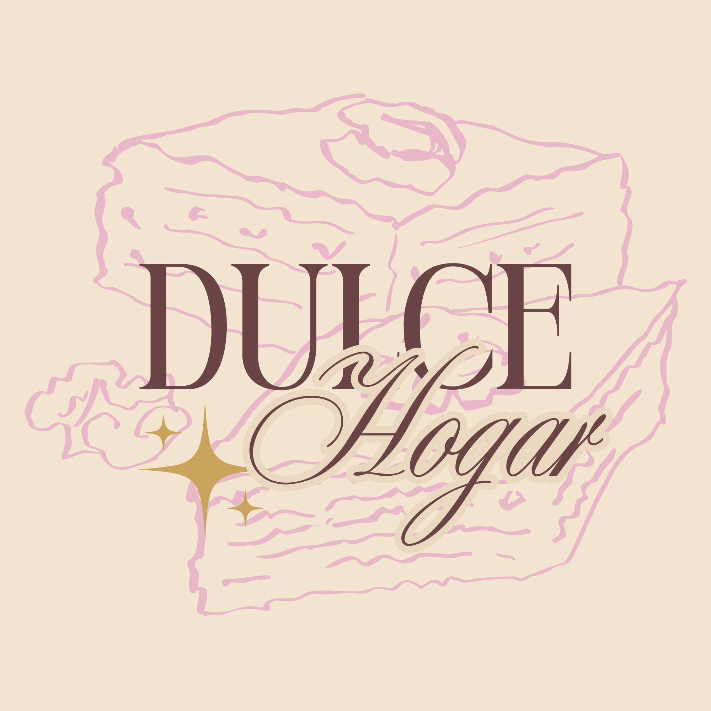

Tradición
Conservamos el encanto de las recetas caseras que han pasado de generación en generación.

Descubre cómo comenzó todo en Dulce Hogar.
Dulce Hogar nació del amor por la repostería casera y el deseo de compartir postres que nos recuerdan a los momentos especiales en familia.
Nuestro emprendimiento está inspirado en las recetas tradicionales de nuestras abuelitas, preparadas con dedicación, ingredientes seleccionados y mucho cariño.
Cada postre busca transmitir la calidez del hogar y crear nuevos recuerdos en cada bocado.
Conservamos el encanto de las recetas caseras que han pasado de generación en generación.
Preparamos cada postre con cuidado y atención a cada detalle.
Queremos que cada dulce evoque momentos felices y recuerdos especiales.